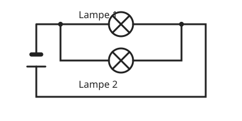

Die Parallelschaltung
Mit einem KI-Tutor lernen
Ein KI-Tutor erklärt dir diese Seite und hilft dir bei den Übungen. Wähl deinen Assistenten:
Mit Claude öffnen Mit ChatGPT öffnen Mit Mistral Vibe öffnen
Du nutzt dein eigenes Konto beim Anbieter. Der Assistent ist kein Angebot von lernapps.net: lernapps liefert nur Inhalte und Übungen. Die Wahl gilt für alle Seiten, nur auf diesem Gerät.
Nebeneinander geschaltet
Bei einer Parallelschaltung liegen die Verbraucher nebeneinander in getrennten Zweigen. Die Leitung teilt sich an einem Verzweigungspunkt, und der Strom kann auf mehreren Wegen fließen.
- Parallelschaltung
In einer Parallelschaltung liegen die Bauteile in getrennten Zweigen nebeneinander. Der Strom hat mehrere Wege.

Parallelschaltung von zwei Lampen. Die Punkte zeigen die Verzweigungen.
Quelle: eigene Zeichnung. Lizenz: CC-BY-4.0.Wenn ein Zweig ausfällt
Geht eine Lampe kaputt, ist nur ihr Zweig unterbrochen. Der andere Zweig bleibt geschlossen, und seine Lampe leuchtet weiter. Deshalb sind die Geräte im Haus parallel geschaltet: Fällt eine Lampe aus, geht nicht der ganze Strom im Haus aus.
Reihe oder parallel?
Reihenschaltung: ein Weg, ein Ausfall stoppt alles. Parallelschaltung: mehrere Wege, ein Ausfall stoppt nur seinen Zweig.
Übung
Übung
Lösung
Sie leuchtet weiter, ihr Zweig ist noch geschlossen. richtige Antwort
Jeder Zweig bildet mit der Batterie einen eigenen geschlossenen Kreis.
Sie geht auch aus.
Das gilt für die Reihenschaltung. Hier gibt es einen zweiten Weg für den Strom.
Sie brennt sofort durch.
Für die andere Lampe ändert sich nichts, sie bleibt ganz normal an.
Bei der Parallelschaltung bleibt der unbeschädigte Zweig geschlossen.
Mehr dazu:
Übung
Lösung
Richtige Antwort: Reihenschaltung – ein Weg für den Strom; Parallelschaltung – mehrere Wege für den Strom
Reihe heißt ein Weg, parallel heißt mehrere Zweige.
Mehr dazu:
Übung
Lösung
Weil jedes Gerät auch ohne die anderen funktioniert. richtige Antwort
Jedes Gerät hat einen eigenen Zweig und lässt sich einzeln ein- und ausschalten.
Weil der Strom sonst verbraucht würde.
Strom wird in keiner Schaltung verbraucht.
Weil Parallelschaltungen weniger Kabel brauchen.
Das stimmt nicht. Es geht darum, dass die Geräte unabhängig voneinander laufen.
Bei einer Parallelschaltung arbeiten die Geräte unabhängig voneinander.
Mehr dazu:
Übung
Lösung
Zweig richtige Antwort
Die Leitung teilt sich in Zweige.
Schalter
Ein Schalter ist ein Bauteil und kein Teil der Verzweigung.
Pol
Pole hat nur die Spannungsquelle.
Jeder Verbraucher hat seinen eigenen Zweig.
Mehr dazu: